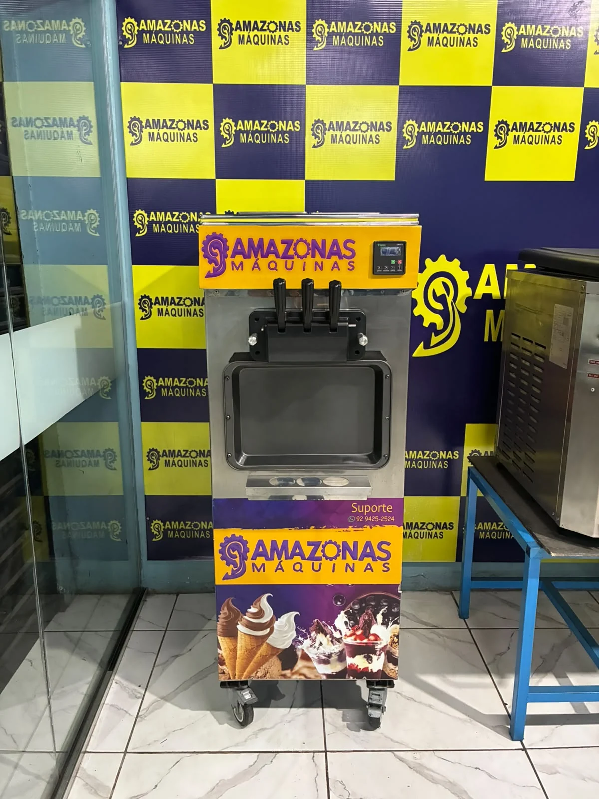
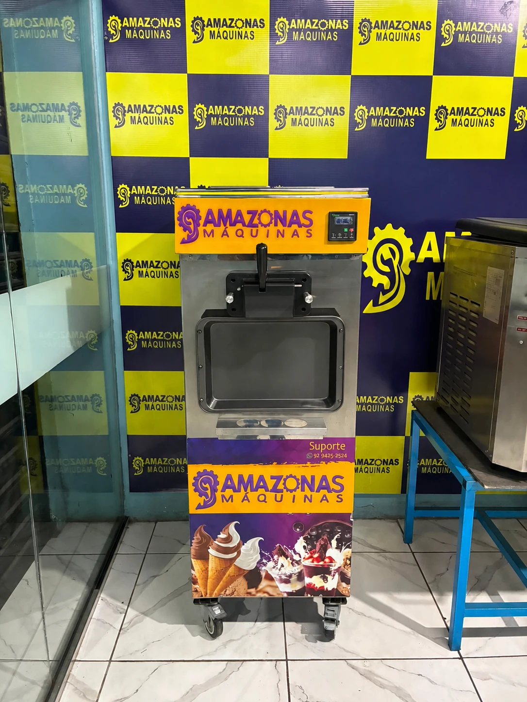
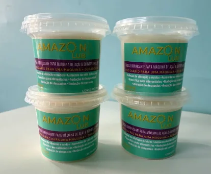
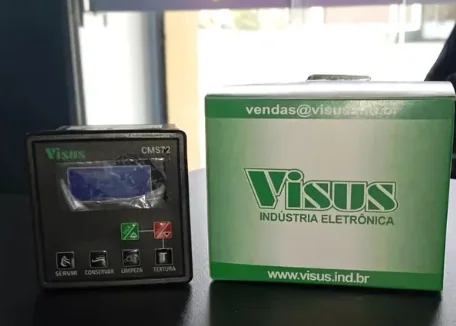
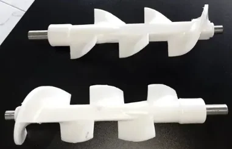
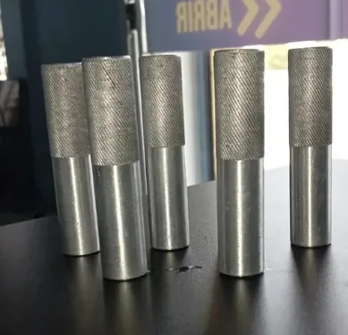

Lubrificante para máquinas
Produto para os pontos de lubrificação indicados na manutenção de máquinas de açaí e sorvete.
Consulte a aplicação correta para o seu modelo.Tecnologia para servir mais
Venda de máquinas para sorvete e açaí, envelopamento personalizado, manutenção especializada, peças e crediário direto com a loja.

Nossas máquinas
Da primeira máquina à expansão da loja, compare as duas configurações e fale com nossa equipe para confirmar disponibilidade.
Mais capacidade
Para operações que precisam servir dois sabores e uma opção de mix com maior ritmo de produção.
Consulte disponibilidade

Operação enxuta
Uma configuração direta para servir um sabor, indicada para quem busca começar ou complementar a operação.
Consulte disponibilidade
Máquinas personalizadas
As capacidades e estimativas de produção acima seguem o material fornecido pela empresa. Confirme todos os detalhes técnicos antes da compra.
Peças e reposição
Parte do catálogo inclui peças de fabricação própria e artesanal. Também trabalhamos com componentes selecionados para reposição.

Produto para os pontos de lubrificação indicados na manutenção de máquinas de açaí e sorvete.
Consulte a aplicação correta para o seu modelo.
Controlador dedicado a máquinas de sorvete, com funções de servir, conservar, limpeza, degelo e ajuste de textura.
Compatibilidade e configuração devem ser confirmadas pela equipe.
Conjuntos internos que movimentam o produto no cilindro e participam do processo de mistura e textura.
Formato e medida variam conforme a máquina.
Peças de reposição produzidas conforme aplicação, medida e necessidade identificada na máquina.
A função e a compatibilidade são verificadas antes da venda.Envie uma foto ou o modelo da máquina para verificarmos a peça correta, a disponibilidade e o valor.
Compra facilitada
Negocie sua máquina diretamente com a Amazonas Máquinas. Consulte entrada, quantidade de parcelas, requisitos e condições disponíveis para o seu pedido.
Prazo, disponibilidade, valor e forma de entrega são combinados conforme o item e o endereço.
Soluções para sua loja
Atendimento para novos empreendedores e estabelecimentos que desejam ampliar ou manter sua produção.
Equipamentos para produção e comercialização de sorvete e açaí, ideais para iniciar ou ampliar sua capacidade.
Personalização da máquina com as cores, o logotipo e os elementos visuais da identidade da sua empresa.
Preventiva, corretiva, higienização técnica, lubrificação, limpeza do condensador e revisão do sistema elétrico.
Ver manutençãoVenda de peças de reposição, itens de fabricação própria artesanal, componentes eletrônicos e produtos para conservação da máquina.
Conhecer as peçasAssistência técnica
O atendimento inclui diagnóstico, prevenção e correção de falhas. A equipe avalia cada equipamento para indicar somente os serviços e as peças necessárias.
Atendimento e orçamento conforme avaliação do equipamento.Revisão periódica e reparo de falhas para reduzir paradas inesperadas.
Desmontagem e limpeza dos conjuntos acessíveis, respeitando o modelo da máquina.
Aplicação nos pontos indicados e conferência de vedações e componentes sujeitos a desgaste.
Remoção de poeira e resíduos que podem prejudicar a ventilação e a capacidade de refrigeração.
Verificação do controlador, comandos, conexões e sinais de funcionamento irregular.
Avaliação de batedores, vedações, acionamentos e outras peças conforme compatibilidade.
Histórias reais
Equipamentos entregues a quem decidiu transformar uma ideia em operação. Toque em uma foto para ampliar.
Quem somos
A Amazonas Máquinas oferece soluções completas para empreendedores que trabalham com sorvete, açaí e sobremesas: máquinas, envelopamento, peças, crediário e manutenção especializada.
Nosso objetivo é ajudar clientes a iniciar ou expandir seus negócios com atendimento próximo, equipamentos adequados à operação e suporte também depois da compra.
Converse com a equipe pelo WhatsApp.
Configurações para diferentes operações.
Envelopamento alinhado à sua marca.
Manutenção preventiva e corretiva.
Dinheiro, cartão, Pix e crediário direto.
Condições tratadas diretamente com a loja.
Vamos conversar?
Fale com a Amazonas Máquinas e encontre a máquina ideal para sua loja de sorvete ou açaí.
Onde estamos
Fale com a equipe antes da visita para confirmar o melhor horário de atendimento.
Cidade Nova — Manaus, AM
CEP 69090-625
08:00 às 17:00
Sábado e domingo: fechado
Suporte: +55 92 9425-2524